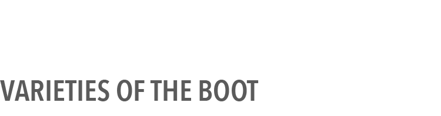

Varieties of the Boot is a local, multidisciplinary community for the preservation, documentation, study, and revitalization of language varieties of Italy through responsible and participatory development of language and speech technologies.
Note: the website will be ready soon. In the meanwhile, you can read the paper. Sounds interesting? You can join the community!
Do you speak a language or dialect of Italy? Are you interested in the preservation and study of these varieties? In the next few days it will be possible to join the community: stay tuned!